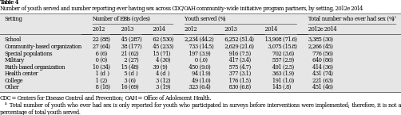

<?xml version="1.0" encoding="UTF-8"?>
<table title="table4" id="table4" class="tabcontent" xmlns="http://www.w3.org/1999/xhtml">
 <tr>
  <td>
   
   <p>corpus-oa-validation/10.1016_j.jadohealth.2016.08.013/tables/table4/table.svg.png</p>
  </td>
  <td>
   <table class="table">
    <caption/>
    <tr>
     <th class="cell">Setting </th>
     <th class="cell">2012 </th>
     <th class="cell">2013 </th>
     <th class="cell">2014 </th>
     <th class="cell">2012 </th>
     <th class="cell">2013 </th>
     <th class="cell">2014 </th>
     <th class="cell">2012e2014 </th>
    </tr>
    <tr>
     <td class="cell">School</td>
     <td class="cell">22 (88)</td>
     <td class="cell">45 (287)</td>
     <td class="cell">62 (530)</td>
     <td class="cell">2,234 (44.2)</td>
     <td class="cell">6,252 (51.4)</td>
     <td class="cell">13,908 (71.6)</td>
     <td class="cell">3,385 (30)</td>
    </tr>
    <tr>
     <td class="cell">Community-based organization</td>
     <td class="cell">27 (64)</td>
     <td class="cell">38 (177)</td>
     <td class="cell">45 (233)</td>
     <td class="cell">733 (14.5)</td>
     <td class="cell">2,629 (21.6)</td>
     <td class="cell">3,075 (15.8)</td>
     <td class="cell">2,266 (45)</td>
    </tr>
    <tr>
     <td class="cell">Special populations</td>
     <td class="cell">6 (6)</td>
     <td class="cell">21 (62)</td>
     <td class="cell">15 (71)</td>
     <td class="cell">197 (3.9)</td>
     <td class="cell">916 (7.5)</td>
     <td class="cell">702 (3.6)</td>
     <td class="cell">776 (56)</td>
    </tr>
    <tr>
     <td class="cell">Military</td>
     <td class="cell">0 (0)</td>
     <td class="cell">2 (27)</td>
     <td class="cell">4 (30)</td>
     <td class="cell">0 (.0)</td>
     <td class="cell">417 (3.4)</td>
     <td class="cell">557 (2.9)</td>
     <td class="cell">640 (86)</td>
    </tr>
    <tr>
     <td class="cell">Faith-based organization</td>
     <td class="cell">10 (34)</td>
     <td class="cell">15 (48)</td>
     <td class="cell">39 (9)</td>
     <td class="cell">450 (9.0)</td>
     <td class="cell">575 (4.7)</td>
     <td class="cell">491 (2.5)</td>
     <td class="cell">414 (36)</td>
    </tr>
    <tr>
     <td class="cell">Health center</td>
     <td class="cell">1 (d)</td>
     <td class="cell">5 (d)</td>
     <td class="cell">4 (d)</td>
     <td class="cell">94 (1.9)</td>
     <td class="cell">377 (3.1)</td>
     <td class="cell">363 (1.9)</td>
     <td class="cell">431 (74)</td>
    </tr>
    <tr>
     <td class="cell">College</td>
     <td class="cell">1 (2)</td>
     <td class="cell">3 (6)</td>
     <td class="cell">3 (12)</td>
     <td class="cell">49 (1.0)</td>
     <td class="cell">176 (1.5)</td>
     <td class="cell">191 (1.0)</td>
     <td class="cell">221 (63)</td>
    </tr>
    <tr>
     <td class="cell">Other</td>
     <td class="cell">8 (18)</td>
     <td class="cell">16 (69)</td>
     <td class="cell">3 (19)</td>
     <td class="cell">323 (6.4)</td>
     <td class="cell">830 (6.8)</td>
     <td class="cell">145 (.8)</td>
     <td class="cell">451 (46)</td>
    </tr>
   </table>
   <p>corpus-oa-validation/10.1016_j.jadohealth.2016.08.013/tables/table4/table.svg.html</p>
  </td>
 </tr>
</table>
